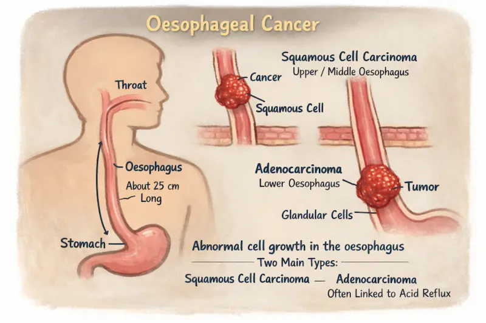
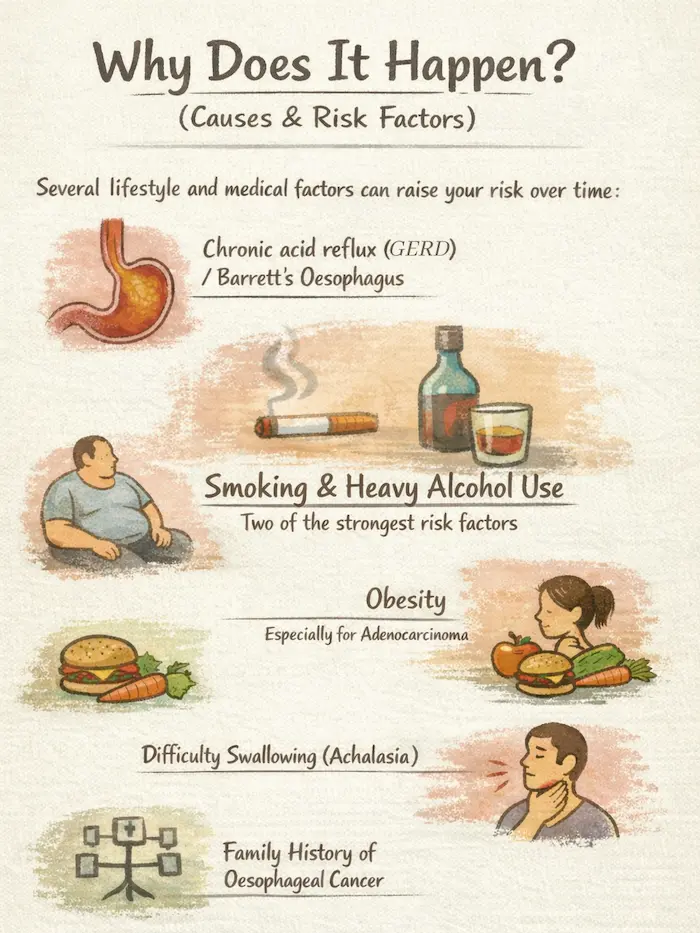
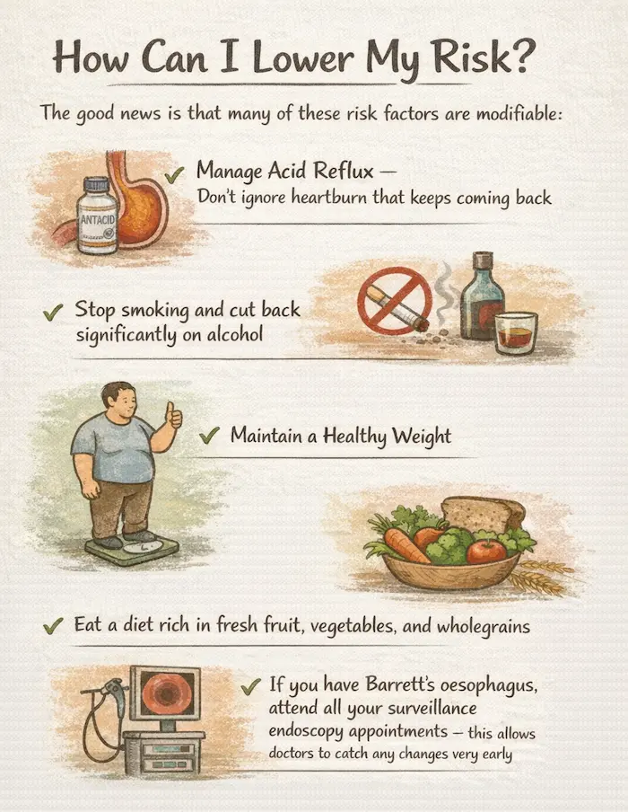
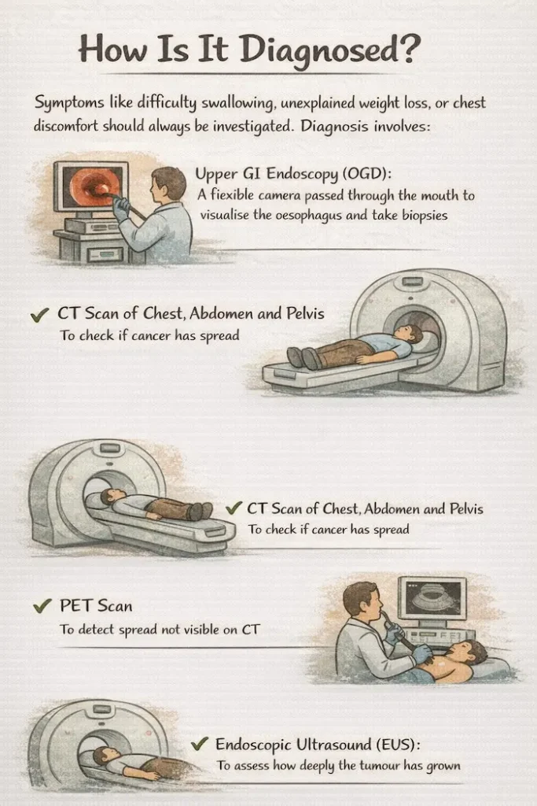
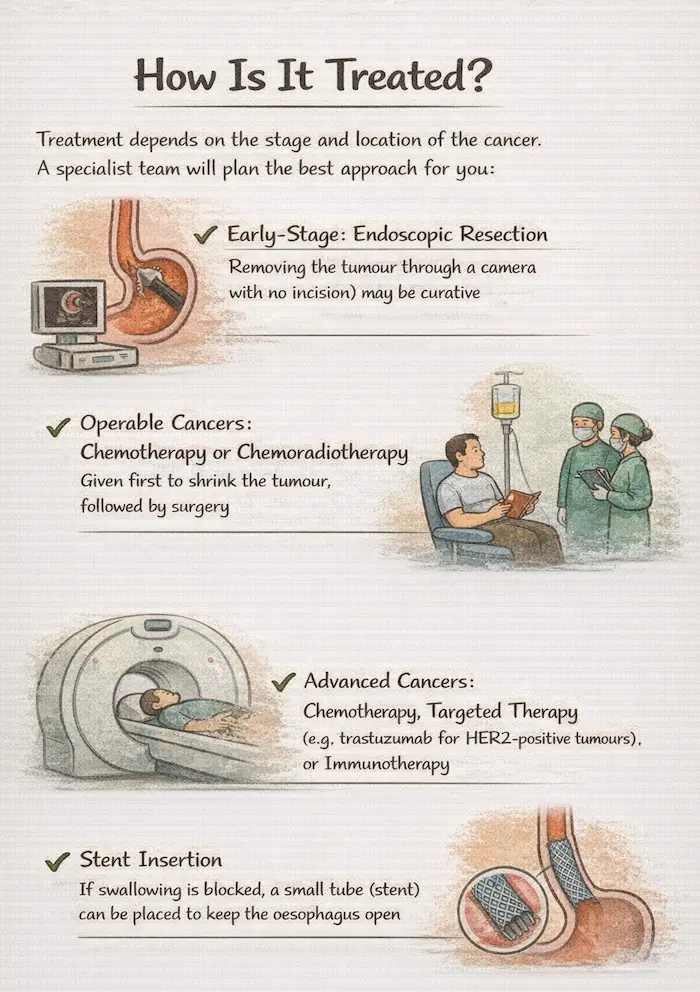
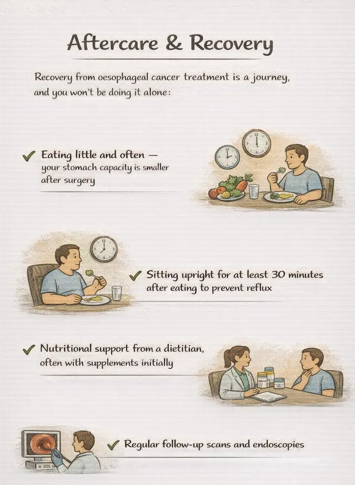

No matter which GI cancer we’re talking about, certain symptoms should always prompt a visit to your doctor without delay. They don’t automatically mean cancer — but they always deserve investigation:
National Cancer Prevention Month
Written for patients and their families — plain language, real answers.
Covering: Oesophageal | Stomach | Liver | Gallbladder | Bile Duct
Pancreatic | Small Bowel | Colon | Rectal | Anal | GIST | NETs
IMPORTANT NOTICE
This blog is for general health education only. It is not a substitute for professional medical advice, diagnosis, or treatment. Always speak with your own doctor or specialist about your personal health situation.
Warning Signs: When to See a Doctor
Red Flag Symptoms — Never Ignore These
- Unexplained weight loss or loss of appetite
- Difficulty swallowing or pain when swallowing
- Persistent indigestion, heartburn, or abdominal pain
- Vomiting blood, or vomit that looks like coffee grounds
- Black, tarry, or bloody stools
- New jaundice — yellowing of skin or whites of the eyes
- Dark urine and pale/clay-coloured stools
- A change in bowel habits lasting more than 3 weeks
- Unexplained new anaemia (low blood count)
- New-onset diabetes after age 50, especially with weight loss
- A lump or swelling in the abdomen
- If you have any of these — please make an appointment with your GP today. Early detection genuinely saves lives.
About This Guide
This guide is brought to you by PancreaCare by Advitya Healthcares .This is one section from a 12-part GI cancer series, and each section follows the same structure—what it is, why it happens, how to lower your risk, how it’s diagnosed, how it’s treated (including what surgery involves), and what recovery looks like—so you can use the headings to jump to what you need, or read straight through, because knowledge is the best first step.
1. Oesophageal Cancer

What Is It?
The oesophagus is the muscular tube — about 25 cm long — that carries food and drink from your throat down to your stomach. Oesophageal cancer starts when cells in the lining of this tube begin to grow abnormally.
There are two main types: Squamous cell carcinoma (starts in the flat cells lining the upper/middle oesophagus) and Adenocarcinoma (starts in glandular cells near the lower oesophagus, often linked to acid reflux). Both are serious but increasingly treatable when caught early.
Why Does It Happen? (Causes & Risk Factors)

Several lifestyle and medical factors can raise your risk over time:
- Chronic acid reflux (GORD) leading to a condition called Barrett’s oesophagus
- Smoking — one of the strongest risk factors
- Heavy, long-term alcohol use
- Obesity, especially for the adenocarcinoma type
- A diet low in fruits and vegetables
- Long-standing difficulty swallowing (achalasia)
- Family history of oesophageal cancer
How Can I Lower My Risk?

The good news is that many of these risk factors are modifiable:
- Manage acid reflux — don’t ignore heartburn that keeps coming back
- Stop smoking and cut back significantly on alcohol
- Maintain a healthy weight
- Eat a diet rich in fresh fruit, vegetables, and wholegrains
- If you have Barrett’s oesophagus, attend all your surveillance endoscopy appointments — this allows doctors to catch any changes very early
Barrett’s Oesophagus: Know Your Status
If you’ve had long-standing acid reflux, ask your GP about a check for Barrett’s oesophagus. This pre-cancerous change can be monitored closely and treated before cancer develops — it’s a genuine opportunity to stop cancer in its tracks.
How Is It Diagnosed?

Symptoms like difficulty swallowing, unexplained weight loss, or chest discomfort should always be investigated. Diagnosis involves:
- Upper GI endoscopy (OGD): a flexible camera passed through the mouth to visualise the oesophagus and take biopsies
- CT scan of chest, abdomen and pelvis: to check if cancer has spread
- PET scan: to detect spread not visible on CT
- Endoscopic ultrasound (EUS): to assess how deeply the tumour has grown
How Is It Treated?

Treatment depends on the stage and location of the cancer. A specialist team will plan the best approach for you:
- Early-stage: Endoscopic resection (removing the tumour through a camera with no incision) may be curative
- Operable cancers: Chemotherapy or chemoradiotherapy given first to shrink the tumour, followed by surgery
- Advanced cancers: Chemotherapy, targeted therapy (e.g. trastuzumab for HER2-positive tumours), or immunotherapy
- Stent insertion: If swallowing is blocked, a small tube (stent) can be placed to keep the oesophagus open
The Surgery: Oesophagectomy
An oesophagectomy removes the affected part of the oesophagus and sometimes the top of the stomach, along with nearby lymph nodes. The stomach is then pulled up into the chest or neck and reconnected — essentially becoming the new oesophagus. It is a major operation typically done using keyhole (minimally invasive) techniques where possible. Most patients stay in hospital for 7-14 days. Recovery at home takes several weeks, with gradual return to eating.
Aftercare & Recovery

Recovery from oesophageal cancer treatment is a journey, and you won’t be doing it alone:
- Eating little and often — your stomach capacity is smaller after surgery
- Sitting upright for at least 30 minutes after eating to prevent reflux
- Nutritional support from a dietitian, often with supplements initially
- Regular follow-up scans and endoscopies
- Speech and swallowing therapy if needed
Many people are surprised by how well they adapt after oesophageal surgery. A specialist dietitian and a structured rehab plan make an enormous difference — don’t hesitate to ask for support.
Have a question this article does not answer?
Send us your reports. A specialist reviews them before you travel, so the first visit begins with a plan rather than a repeat test.